Практичний досвід · журнал «ДентАрт» 2020 №2
Ендопереліковування з передендодонтичним відновленням зубних тканин
Endo Retreatment with Pre-Endodontic Restoration of Dental Tissues
Коли ми маємо справу із зубами, в анамнезі яких є ендодонтичне лікування, що з якихось причин виявилося неуспішним, перед нами завжди стоїть дилема: обрати повторне ендодонтичне лікування чи видалення зуба? Упровадження в повсякденну практичну стоматологію імплантатів знижує потребу в нехірургічних методах повторного ендодонтичного лікування. Існує прислів'я: «Коли в руках молоток, усе навколо здається цвяхами». Як ендодонтисти, ми маємо повний комплект інструментів, які за наявності знань і досвіду можемо застосувати на благо наших пацієнтів і які дають можливість запропонувати пацієнтові зубозберігаючий підхід.
При виборі між повторним лікуванням та видаленням зуба слід враховувати кілька факторів:
- Чи можна зуб урятувати?
- Яку функцію виконує цей зуб?
- Яка очікувана тривалість функціонування завершальної реставрації?
- Наскільки реалістичні бажання й очікування пацієнта?
- Скільки потрібно процедур, їх тип і тривалість?
У статті ми хочемо продемонструвати покрокові етапи повторного лікування зубів з пропущеною анатомією кореневої системи.
Клінічний приклад повторного ендодонтичного лікування першого верхнього моляра
Пацієнтку 34 років лікар-ортопед направив для проведення повторного лікування зуба 16, у планах — тотальна реабілітація. Скарг пацієнтка не висувала. При об'єктивному огляді: перкусія слабкопозитивна, пальпація безболісна, зондування зубоясенного жолобка в межах норми (уточнимо, що в піднебінному кореневому каналі стоїть «активний» анкерний штифт, і важливо виключити наявність вертикальної фрактури кореня, основною ознакою якої є наявність атипової вузької пародонтологічної кишені).
В анамнезі приблизно 5 років тому проведене ендодонтичне лікування з подальшим армуванням і реставрацією коронкової частини зуба 16. На інтраоральній рентгенограмі зуба 16 визначаються наявність радіолюцентної ділянки в періапікальних тканинах піднебінного кореня, неспроможна обтурація кореневої системи, анкерний штифт у піднебінному кореневому каналі, пропущений другий мезіально-щічний кореневий канал (МВ2), масивна реставрація та каріозна порожнина на дистальній проксимальній поверхні.
Діагноз: асимптоматичний апікальний періодонтит зуба 16.
Лікування
Проведено інфільтраційну анестезію, і під контролем операційного мікроскопа Zumax 2350 (Zumax Medical) за допомогою підвищувального наконечника Тi-Max Z95L (NSK) і кулястим бором на довгій ніжці 801M012 (Komet) видалено стару реставрацію, некректомія контролювалася карієс-маркером Sable Seek (Ultradent). У цьому клінічному випадку ми зіткнулися з проблемою — різницею положення ясенного краю щодо медіально-апроксимальної частини зуба, для нівелювання якої застосували коагуляцію м'яких тканин.
Під час виймання анкерного штифта слід видалити композитний матеріал навколо штифта, рекомендуємо зробити це за допомогою підвищувального наконечника, бором 8889M.314.007 із сету Dr. Stefan Neumeyr (Komet). Це дозволяє зробити більш контрольовану маніпуляцію, зменшує ймовірність стоншування дентину дна і стінок порожнини зуба, мінімізує зріз самого штифта. Власне витягування металевого штифта здійснюється за допомогою ультразвуку (найдешевший і найпростіший варіант — насадка для зняття зубних відкладень). Дуже важливо, щоб при роботі з ультразвуком був підібраний такий кут торкання і такий натиск, щоб звук був найсильнішим, тоді вібрація буде максимальною; не слід тиснути з повним запалом насадкою на штифт, оскільки тиск зменшує силу вібрації. При появі руху штифта «озвучування» роблять ультразвуковою насадкою проти годинникової стрілки до повного викручування.
«Ні рабердаму — немає ендодонтії»
Це девіз, з яким слід розпочинати лікування. На жаль, багато лікарів продовжують працювати без рабердаму і знаходять масу відмовок типу складності процедури накладення рабердаму, відмов пацієнтів і, звичайно ж, тривалості маніпуляції. Але відпрацьована процедура накладення рабердаму може тривати менше 1 хвилини і не тільки поліпшує прогноз ендодонтичного лікування, але й дозволяє отримати задоволення від роботи.
Після ізоляції рабердамом ми застосовуємо у своїй практиці повітряно-абразивну обробку внутріоральним піскоструминним наконечником DentoPrep Microblaster (Ronving) оксидом алюмінію абразивністю 50 мікронів, що дозволяє отримати ідеальну підготовку порожнини зуба перед безпосередньою реставрацією пломбувальними матеріалами. Після цього можна братися до адгезивного протоколу і відновлення стінок зуба (надаємо перевагу core-композитам).
- Відсутність каріозного процесу (якщо працювати за класичними протоколами, всі уражені карієсом тканини потрібно видалити);
- точність визначення робочої довжини при використанні апекслокатора (немає підтікання ясенної рідини, слини чи крові);
- економія часу і матеріалу (один із прикладів: зняття рамки при прицільному рентгензнімку може призводити до відколу старої реставрації, деформації або відриву об'єму рідкого рабердаму від поверхні зуба, веде за собою порушення ізоляції і може призвести до реінфікування системи кореневих каналів);
- зручність, безпека і прогнозованість роботи з агресивними іригаційними розчинами та ендодонтичними інструментами;
- легкість контролю робочої довжини під час інструментальної обробки, оскільки периметр порожнини розташовується на одному рівні і силіконові стопери не зміщуються у найвідповідальніший момент.
Краще витратити трохи часу, виконати якісне попереднє відновлення коронкової частини зуба і створити комфортні умови для ендодонтичного лікування.
З якого кореневого каналу краще починати лікування? Слід проаналізувати, де є періапікальне ураження, щоб іригаційний розчин потрапив у потрібну зону раніше і в більшому обсязі, тоді дезінфекція кореневого каналу буде ліпшою. У цьому випадку проблемним був піднебінний кореневий канал (при повторній ендодонтії зробіть акцент на дезобтурації одного кореневого каналу від А до Я, і так усі по одному почергово). У піднебінному кореневому каналі перешкод ми не зустріли, оскільки відразу ж вдалося визначити робочу довжину, обробка завершилася майстер-файлом 40.04 (MasterApicalFile, MAF).
У дистальному щічному кореневому каналі під контролем операційного мікроскопа вимітаючими рухами працювали насадкою E1 (Woodpecker), відомою як «ендочак», + U-file 20 (Mani) в комбінації з Н-file 20.02 і постійною іригацією нагрітим 5,25% розчином гіпохлориту натрію. Видаляємо старий обтураційний матеріал (гутаперча з цинкоксидевгенольним силером), отримавши прохідність 10.02 К-файл (Kendo, VDW), і далі послідовно E3 Azure (Poldent) 30.08, 25.06, 30.04, 35.04.
У мезіальному щічному каналі все виконано за тим же сценарієм, що і в дистальному щічному. Попереду на нас чекав найскладніший етап — це другий мезіальний щічний кореневий канал (МВ2). Під яким кутом краще вводити файл у цей канал? Для запобігання утворенню сходинки (Ledge) інструмент слід вводити у дистально-піднебінному напрямку щодо основного мезіального щічного кореневого каналу (MB1), і краще це зробити K-файлом 06.02, 08.02, 10.02, а далі мій вибір — узяти будь-який класичний Ni-Ti ротаційний інструмент — 15.02, 20.02 EndoStar NT2 (Poldent), або 10.04 М2 (VDW), або ProTaper S1 (Dentsply Sirona), вимітаючими рухами створити повноцінну килимову доріжку і прибрати навислий дентинний козирок. Остаточна обробка виконана улюбленою системою E3 Azure 30.08, 25.06, 30.04. Протокол обтурації: гутаперчеві штифти відкалібровані, канали обтуровані методикою гарячої вертикальної конденсації гутаперчі за Шілдером, як силер, застосовувався AH+ (Dentsply Sirona).
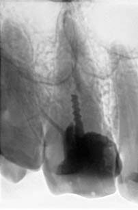
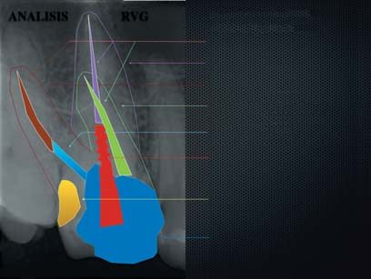
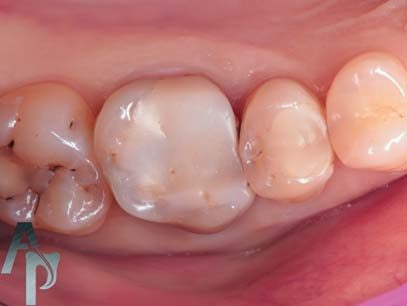
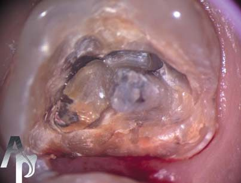
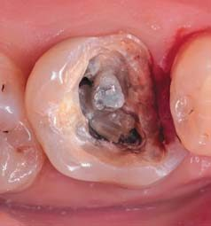
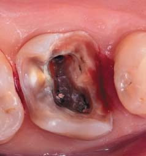
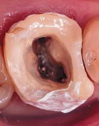
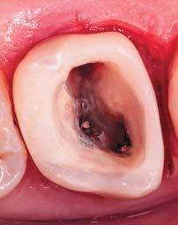
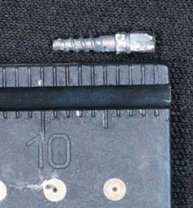
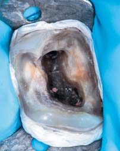
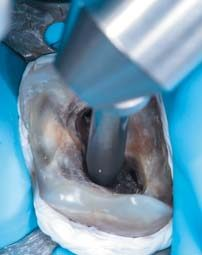
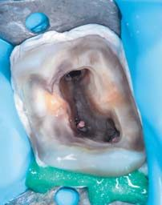
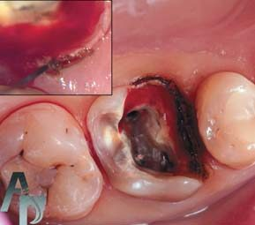
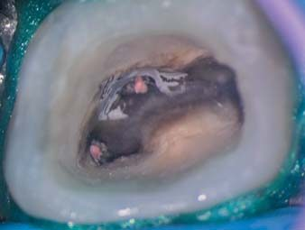
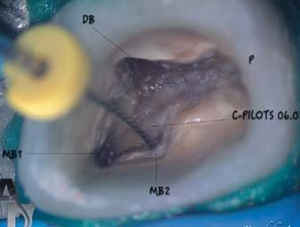
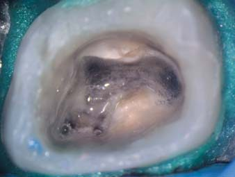
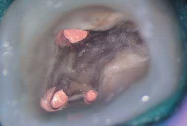
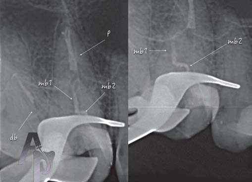
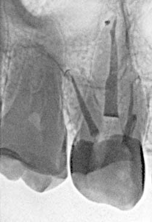
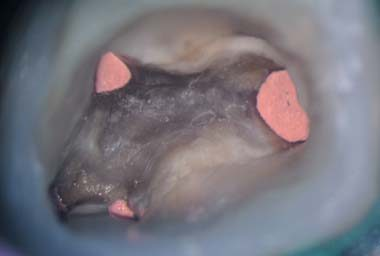
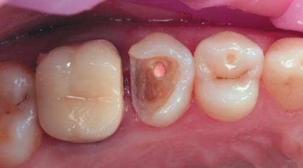
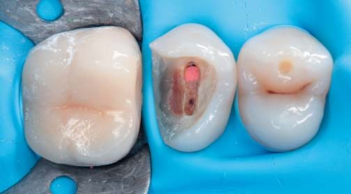
Клінічний приклад повторного ендодонтичного лікування другого верхнього премоляра
Пацієнтку 35 років направив до нас у клініку для повторної ревізії другого премоляра верхньої щелепи стоматолог, з яким ми співпрацюємо на постійних умовах. Скарги з боку пацієнтки на застрявання їжі і гнильний запах. В анамнезі 3 роки тому резекція верхівки кореня. При візуальному огляді зуба 25 виявлено дві композитні пломби. Перкусія, пальпація і холодова проба — безболісні, зондування зубоясенного простору — в межах норми. На прицільній рентгенограмі зуба 25 виявили пропущений піднебінний кореневий канал, ділянки просвітлення в періапікальних тканинах піднебінного кореня, щічний кореневий канал обтурований, і є сліди оперативного втручання (в анамнезі 5 років тому резекція верхівки кореня).
Діагноз: асимптоматичний апікальний періодонтит зуба 25.
Лікування
Після анестезії під контролем операційного мікроскопа Zumax 2350 (Zumax Medical) підвищуючим наконечником Ti-Max Z95L (NSK) бором 8830M.314.02 з комплекту Dr. Stefan Neumyer (Komet) видалена реставрація і зроблена некректомія під контролем карієс-маркера Sable Seek (Ultradent). Виявлено, що дах порожнини зуба розкрито лише в проекції щічного кореневого каналу, на усті цього ж каналу — пломбувальний матеріал, а піднебінний кореневий канал не обтурований.
Порожнина зуба 25 розкрита повністю (бор 8889М.314.007), і причини появи апікального періодонтиту стають цілком зрозумілими — пропущена анатомія кореневої системи, в якій виявлена муміфікована коронкова пульпа і некротизована коренева пульпа. Далі зроблене передендодонтичне відновлення дистальної проксимальної стінки: тканини зуба повітряно-абразивно оброблені оксидом алюмінію зернистістю 50 мікронів за допомогою внутріорального піскоструминного наконечника Dento-Prep Microblaster (Ronving), проведені протравлювання гелем Ultra-etch (Ultradent), адгезивна обробка OptiBond FL (Kerr), для відновлення використаний текучий композит Estelite Flow Quick, наповнений композит Estelita Sigma Quick (Tokuyama).
Під контролем операційного мікроскопа розпломбовуємо щічний кореневий канал, використовуючи ультразвукову насадку E1 (Woodpecker) + U-files 20 розміру (Mani). Вимітаючими рухами в комбінації з H-file 25.02 (Kendo, VDW) і зі щедрою іригацією теплим 5,25% розчином гіпохлориту натрію вдалося акуратно витягнути старий обтураційний матеріал, під контролем апекслокатора RayPex 5 (VDW) відкалібрували апікальну третину, що залишилася, K-file 70.02 (Kendo, VDW). Робоча довжина каналу становила 15 мм.
Пройшли піднебінний кореневий канал (K-file 08.02 (Kendo, VDW)), відразу ж досягли потрібної позначки на апекслокаторі, створили килимову доріжку до K-file 15.02 (Kendo, VDW) і розпочали механічну інструментальну обробку файлами Endostar E3 Azure (Poldent) 25.06, 30.08, 30.04. Довжина піднебінного каналу — 18 мм.
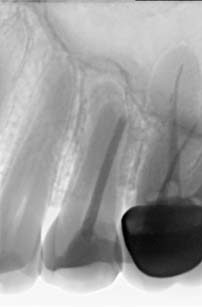
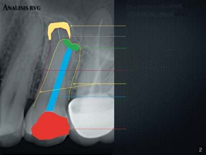
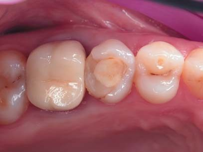
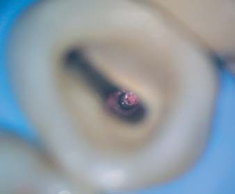
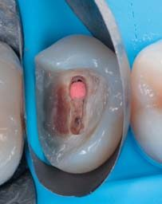
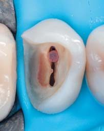
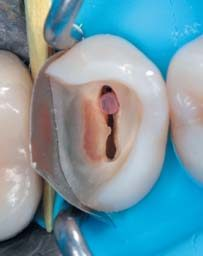
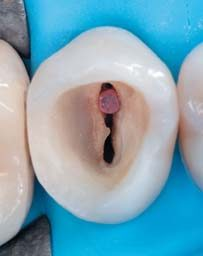
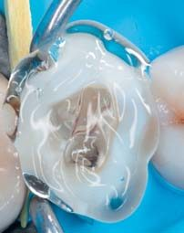
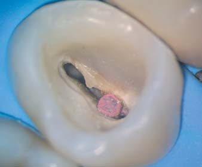
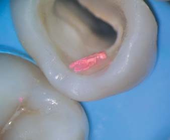
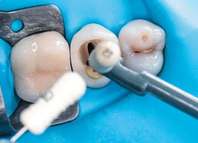
Отже, найцікавіше — це обтурація: у щічному кореневому каналі за всіма показаннями слід зробити герметизацію верхівки кореня. Для апікальної матриці використано гемостатичну губку Gelatamp (RoeKo), а для апікальної пробки обрано біокераміку TotalFill BC RRM Fast Set Putty (FKG). У піднебінний кореневий канал ввели відкалібрований гутаперчевий майстер-штифт (калібрування майстер-штифта 20.04 до 30-го розміру за допомогою калібрувальної лінійки Dentsply Sirona) і виконали контрольний рентгенографічний знімок.
Ми були задоволені результатом і взялися до обтурації. У піднебінному кореневому каналі апікальну третину обтурували гутаперчею із силером АН+ в техніці гарячої вертикальної конденсації за методом Шілдера, у щічному кореневому каналі створена штучна пробка з біокераміки, далі обидва кореневих канали були заповнені гарячою гутаперчею інжектором (Meta) лише до середньої третини кореневих каналів, бо надійшла рекомендація від стоматолога, який направив до нас пацієнтку, армувати зуб скловолоконними штифтами.
Найліпшу підготовку ендодонтично лікованих зубів під різні види штифтових конструкцій може зробити стоматолог-ендодонтист, бо він має повну інформацію про довжину, конфігурацію кореневого каналу і може зробити це точніше, полегшивши подальшу роботу стоматолога-ортопеда. У цьому клінічному випадку трохи адаптували два скловолоконних штифти, які зафіксували на цемент подвійного затвердіння U-200 (3M).
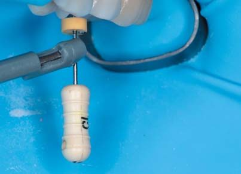
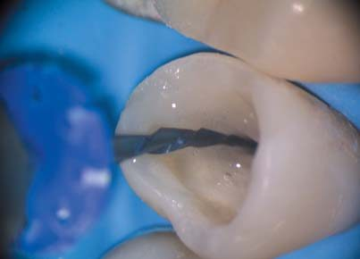
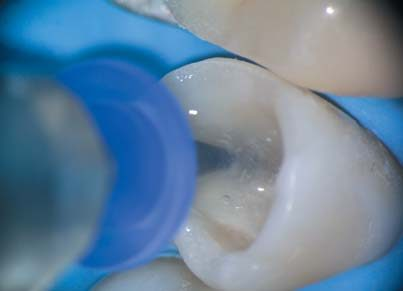
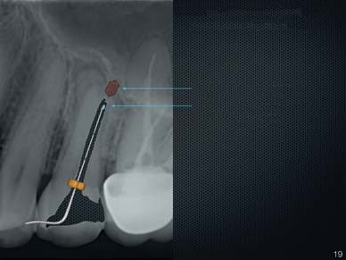
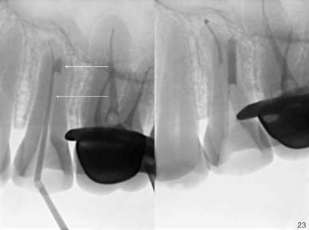
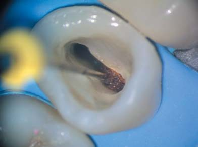
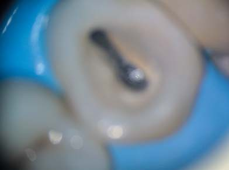
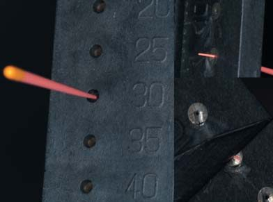
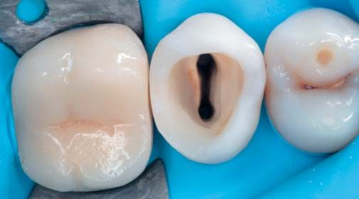
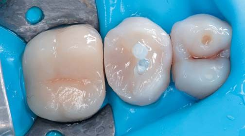
Висновки
Можливості збереження і відновлення девітальних зубів різноманітні. Стратегія лікування зумовлена передусім бажанням і довірою пацієнтів, професійними можливостями лікаря-стоматолога і технічним оснащенням стоматологічного кабінету.
Література
- Nair P. Light and electron microscopic stadiues on root canal flora and periapical lesions // J. Endod. — 1987. — vol. 13. — P. 29-39.
- Kakehashi S., Stanley H. R., Fitzgerald R. J. The effects of surgical eхposures of dental pulps in germ-free and conventional laboratory rats // Oral Surg. — 1965. — Vol. 20. — P. 340-349.
- Reit C., Kvist T. Endodontic retreatment behaviour: the influence of disease concepts and personal values // Int. Endod. J. — 1998. — Vol. 31. — P. 358-363.
- Bergenholtz G., Lekholm U., Milthon R., Heden G., Odesjo B., Engstrom B. Influence of apical overinstrumentation and overfilling on re-treated root canals // J. Endod. — 1979. — Vol. 5. — P. 310-314.
- Cohen A. G. The efficiency of different solvents used in the retreatment of paste-filled root canals. — Master Thesis, Boston University, 1986.
- Wilcox L. R., Krell K. V., Madison S., Rittman B. Endodontic retreatment: evalaution of guttapercha and sealer removal and canal reinstrumentation // J. Endod. — 1987. — Vol. 13. — P. 453-457.